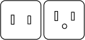

About Japan
Japan is a nation of contrasts and ever changing surprises with its seductive blend of traditional and ultra-modernism. Japan provides a beautiful mix of old and new, from the shimmering Yokohama waterfront to the bustling Osaka alleyways, snowy environments of Sapporo, Kyoto's ancient neighbourhoods. Select your season and experience the wonders of cherry blooms, shopping, and cultural events in Tokyo in the summer of the year in Kyoto, the Autumn Maple Leaves in Shizuoka or the perfect skiing conditions of Hokkaido in the winter months.
Even during the fall, Japan is an increasingly popular destination with excellent food and exceptional cleanliness and countless distinctive subcultures. When you start exploring deeply in a multi-faceted nation, you will always find something new in Japan, where traditional and modern elements combine to create something different.
-
Currency
Japanese Yen
1 AUD = 74.73 JPY
-
Language(s)
Japanese
-
Best Time To Visit
MARCH - APRIL
Cherry Blossom Season
Travel Information
-
Country Code: +81
Time Zone: GMT +9 hours
Peak Travel Period: April to May, August
Four Seasons: Yes
Currency: Japanese Yen, JPY (¥)
-
Transport Card: Suica, Pasmo, Icoca
Tap Water: Safe to drink
AC Socket Type: Types A & B – 100V 50/60Hz

Useful Phrases
While technically part of China, they still use the Cantonese and Traditional writing system instead of the Mandarin and Simplified writing system of that in Mainland China. Also, English is widely used.
-
Greetings (morning) – おはようございま Ohayo gozaimasu
Greetings (afternoon) – こんにちは Konnichiwa
Greetings (evening) – こんばんは Konbanwa
Thank you – ありがとうございます Arigato gozaimasu
Excuse me – すみません Sumimasen
-
Sorry – ごめなさい Gomenasai
Delicious – おいしい Oishi
Cheers – かんぱい Kanpai
To show appreciation before eating – いただきますItadakimasu
Thank you for the delicious meal – 御馳走様 でした Gochisou sama deshita